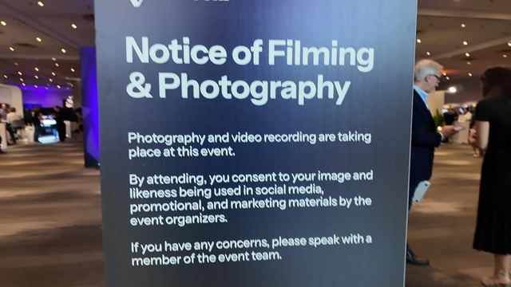
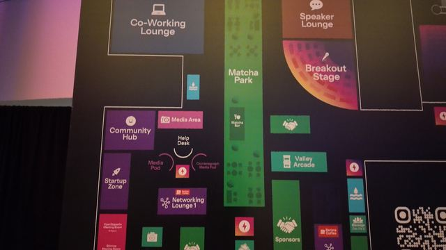
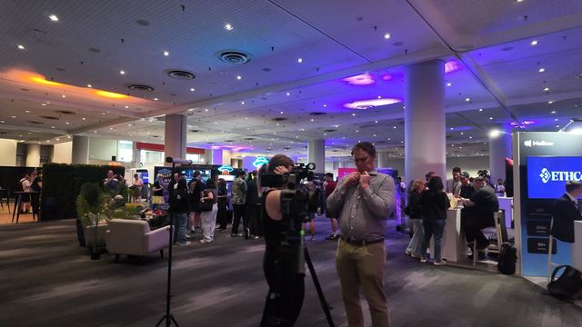
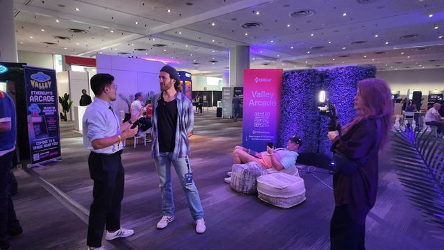
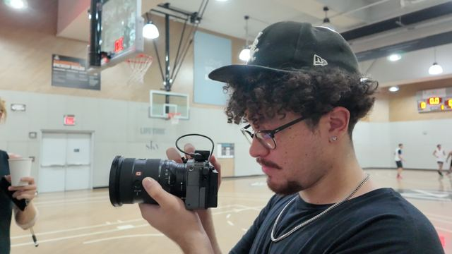
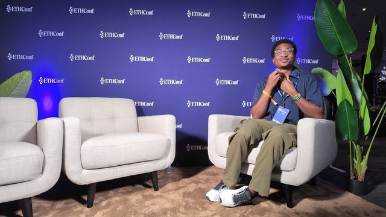
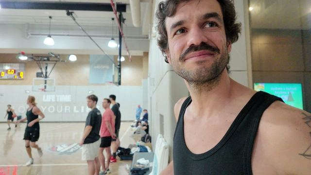

ETHConf 2026, and the people filming it.
“This is the first ever ETH Conf,” Sarah of Cactus Can told Maceo. Her crew, from Sydney, was making ETHGlobal’s daily videos of it. He was there for We Them Media, and when he met the other people filming the conference, he interviewed them.
Browse the archive Projects, Where we filmed, Topics, Contributors, One question, The library
The people filming it.
Each conversation plays here, with the full transcript on its own page.
Cactus Can
A production company from Sydney, about six people, that travels with ETHGlobal to its events. Maceo found Lucy and Sarah on the floor interviewing the artist Shanelle Julia Rosita, filmed them at it, then asked about their own work.
“We're a production company from Sydney. We're called Cactus Can, and we work closely with the ETHGlobal team.”
“When we're on an ETHGlobal job, we send it back to Sydney, they can work on it while we're asleep. And then when we wake up, we then jump on it.”
“By 5 PM of each day, we already have the daily video complete.”
“At the end of today, we'll have the 1-minute wrap-up with the narrative from the last 3 days.”
“I think we need storytelling like this in this space. … I'm very compelled seeing you two ladies do this work.”

Jacob Feingold, Shawn P. Bruce and Sire Roman
Three freelancers with a Leica rig, following a CEO around New York for two days. Sire got the work by talking to a customer at the camera store where he works. This was his fourth or fifth job with that client.
“Being the type of person that someone wants to ask you to come back for. That's even more important.”
“People wanna know that you know what you're doing with them. So they want to know someone that's like documenting with integrity.”

The artist Cactus Can were filming
Shanelle Julia Rosita
A visual abstract artist. She pitched the conference a creative break between the workshops, and hosted it.
“We didn't have to yell and shout about creativity at a tech conference”

What the filming looked like.
Frames from Maceo’s camera that week.






More from ETHConf.
26 more pieces from the conference week, each on its own page.
 Length 1:53
Length 1:53
Blockchain: the next foundation of finance. ETH Global NYC, the trailer.
 Length 12:31
Length 12:31
Crypto, privacy and global finance at ETHconf: Maggie of Unlink.
 Length 15:26
Length 15:26
Arikia Millikan, on licensing journalism peer to peer.
 Length 42:18
Length 42:18
Durgadas, on coordinating people and capital.
 Length 15:52
Length 15:52
Income verification, onchain lending, and neobanks.
 Length 5:13
Length 5:13
Estonia ran government records on a blockchain first.
 Length 3:56
Length 3:56
One builder’s perspective on Bitcoin, Chainlink, and Ethereum.
 Length 9:44
Length 9:44
ETHConf: ETH as digital oil, and a school anyone can teach at.
 Length 4:31
Length 4:31
ETHConf: AI agents that shop for you.
 Length 5:20
Length 5:20
ETHConf: you don't have to be technical to start in crypto.
 Length 3:54
Length 3:54
ETHConf: blockchain en más de 40 universidades argentinas.
The last day of ETHConf, and an $8,000 airdrop.
 Length 3:16
Length 3:16
Six months after quitting the nine to five.

Length 2:13Builder reputation onchain: Philippe of Talent Protocol.
 Length 12:38
Length 12:38
ETHConf: in a builder market, money chases talent.
 Length 10:33
Length 10:33
ETHConf: an Ethereum builder on his plan to run for office.
 Length 8:09
Length 8:09
ETHConf: loot boxes are crypto's quiet $100M business.
 Length 7:10
Length 7:10
ETHConf: why data contributors should be rewarded.
 Length 6:01
Length 6:01
ETHConf: arcade cabinets that onboard you to crypto.
 Length 4:15
Length 4:15
ETHConf: DeFi is confusing, even for developers.
 Length 6:01
Length 6:01
ETHConf: crypto for people who can't trust their bank.
 Length 7:00
Length 7:00
ETHConf: borrowing against stocks to buy a matcha.
 Length 7:07
Length 7:07
ETHConf: AI agents as a startup's first hires.
 Length 4:18
Length 4:18
ETHConf: decentralized KYC and stablecoins for cross-border trade.
 Length 4:07
Length 4:07
ETHConf: a software engineer looks under DeFi's yield.
 Length 3:03
Length 3:03